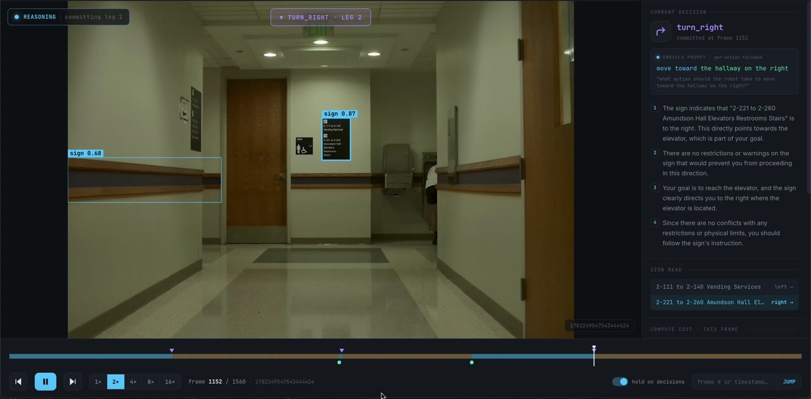

Publications
 CVPRW'26
CVPRW'26
 Under Review
Under Review
Robots That Know When to Ask: VLM-Driven Reasoning for Human-on-Demand Multi-Robot Teleoperation
Under review
Projects

Current research
Long-Horizon Sign-Guided VLA for Mapless Navigation
Developing a sign-guided Vision-Language-Action framework for long-horizon mapless navigation, using semantic scene understanding and language reasoning to move toward user-specified destinations without relying on a fixed map.

Reinforcement learning
RL-Based Alert System for Intersection Safety
Designed a PPO-based alert policy for an MnDOT-funded intersection-safety project, fusing vehicle-to-vehicle interaction data to identify and flag high-risk traffic conflicts in real time at signal-free rural intersections.

Full-Stack Autonomous Navigation System for AgileX Hunter 2.0
Developed a production-ready modular ROS 2 autonomy stack integrating NDT-OMP LiDAR localization, D*+ path planning, and collision avoidance for autonomous indoor navigation using RobotSense LiDAR in pre-mapped environments. Built collision avoidance pipeline using OBB-voxel intersection tests against octomap with automatic replanning capabilities and YAML-based configuration for rapid deployment.

Multi-Modal Diffusion based Driving Policy
Developed a lightweight Vision-Language-Action (VLA) diffusion policy utilizing a custom CNN-Transformer architecture to predict autonomous trajectories from natural language instructions. Implemented 5-step Action Chunking to improve multimodal trajectory prediction and mitigate mode collapse.

Robot Manipulation via Action Chunking Transformers in ManiSkill
Built an end-to-end imitation learning pipeline using Action Chunking Transformer (ACT) architecture to train robot arm manipulation policy on RGBD observations, achieving 95%+ success rate on PickCube task with 30K training iterations. Trained on HuggingFace PickCube-v1 dataset, implementing trajectory replay and video-based evaluation pipeline.

Advanced Driver Assistance System (ADAS)
Developed an ADAS suite (FCWS, LDWS, LKAS) using YOLOv8m for detection, ByteTrack for trajectory tracking, and UFLD-v2 (ResNet-18) for lane detection, achieving real-time inference via TensorRT/ONNX acceleration.

Video Prediction Framework for Latency Compensation
Developed a video prediction framework by training an encoder-decoder architecture on BDD100K dataset to compensate for 100ms+ network latency in teleoperation, utilizing future-frame prediction to maintain real-time visual feedback during remote driving.